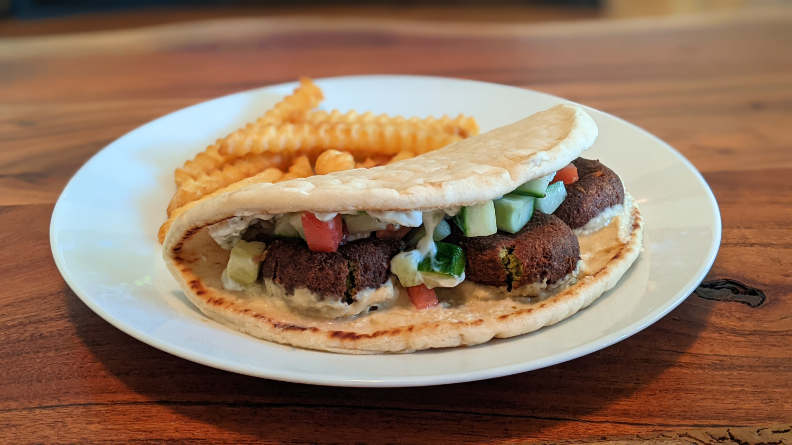

Falafel Sandwich

Author: Derek Nichols |
Cooked: July 2, 2022
Yields: 5 Servings | Prep Time: 20 Minutes | Cook Time: 30 Minutes
Ingredients
- 2 c. dried chickpeas
- 1 c. fresh parsley
- 3/4 c. fresh cilantro
- 1 small yellow onion, quartered
- 4 medium garlic cloves, peeled
- 1 Tbs ground black pepper
- 1 Tbs ground cumin
- 1 Tbs ground coriander
- Salt to taste
- 1 tsp baking powder
- Flour (optional)
- Vegetable oil for frying --------------------------
- 1 English cucumber, diced
- 2 Roma tomatoes, diced
- 2 Tbs parsley
- 2 Tbs olive oil
- 1 lemon
- Feta cheese
- Salt
- Ground black pepper
- Pita bread
- Hummus
- Tzatziki
- Falafel
- Sriracha (Optional)
Falafel
Sandwich
Directions
- The day before cooking, soak the dried chickpeas in enough water to cover them by at least 2 inches. When ready, drain the chickpeas and pat dry.
- Remove the stems from the parsley and cilantro and add them to a food processor with the chickpeas, quartered onion, peeled garlic, and spices (minus the salt). Run in 30 second increments until well combined. Then stir in salt to taste.
- Refrigerate the mixture for 15-60 minutes. The longer the better as it will grant a firmer mixture.
- Stir baking powder into the mixture. If mixture is too loose, add flour in 1 Tbs increments.
- Fill a Dutch oven or medium pot with 2-3 inches of vegetable oil and heat to 375°F. Roll 1-1.5 inch balls of the falafel mixture and carefully lower them into the oil being careful not to crowd the oil and keeping an eye on the oil temperature. Cook for 4-6 minutes until medium brown on the outside. Test the first falafel to get a better idea of cooking time.
- Remove falafel from oil and place on plate lined with paper towels.
Falafel
- To make Israeli salad, dice cucumber and tomatoes and chop parsley. Add olive oil, juice of 1 lemon, preferred amount of feta, and salt and pepper to taste.
- On a piece of pita bread, spread preferred style of hummus on one half and tzatziki on the other. Add 3 falafel to the hummus side and crush slightly. Add Israeli salad and optional sriracha to the side with the tzatziki.
- Fold pita and voilà!
Sandwich
Additional Notes
- You must use dried chickpeas and not canned!
- I read that you should soak the chickpeas overnight at room temp, but I had them in the fridge (to hide them from my curious cat) and they seemed to turn out just fine.
- We didn't dry off our chickpeas before putting them in the food processor which made the mixture too wet. We added tablespoons of flour at a time until the mixture would hold together enough prior to deep frying.
- Keep an eye on the oil temp as you add falafel to the pot as this will lower the oil temperature and increase cooking time.
- Pickled red onions would be great on this!